Guia: como alterar as plataformas e como a alteração chega ao site
Este guia é para quem cuida do conteúdo das plataformas (dicionário, enciclopédia, fauna, plantas, fotos, gravações, páginas do portal) e não é programador. Ele mostra, passo a passo, onde fica cada coisa, como mudar, o que acontece depois e o que fazer quando algo dá errado.
Os exemplos usam o Boe Eno Moto (Bororo, repositório boeenomoto), mas valem igualmente para
o Enawenê-Nawê (enawenenawe) e para as próximas plataformas.
Sumário
- Como tudo se encaixa
- Onde fica cada coisa no repositório
- Alterar pelo navegador, sem instalar nada
- Alterar no seu computador
- Quando algo dá errado
- Receitas para tarefas comuns
- Atualizar o terradoc numa plataforma
- Começar uma plataforma nova
- Regras que importam
- Pequeno glossário
1. Como tudo se encaixa
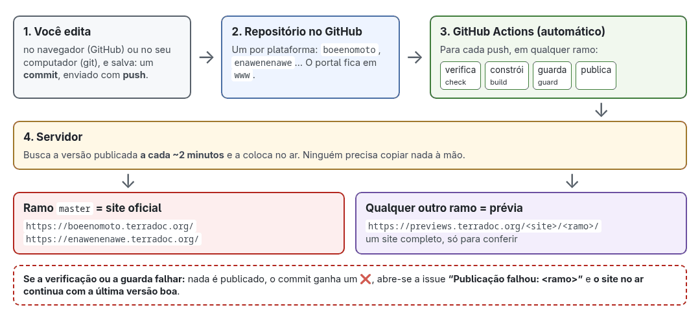
- Cada plataforma é um repositório no GitHub, na organização
plataformasindigenas:boeenomoto,enawenenawe, e um novo para cada povo. O portal (https://plataformas.terradoc.org/) fica no repositóriowww, na pastaportal/. - O repositório é o site. Os sites são gerados a partir dos arquivos de dados e de texto do repositório por um programa chamado terradoc. Ninguém edita as páginas HTML à mão.
- Cada alteração salva e enviada ao GitHub (um push) dispara o GitHub Actions, que faz
quatro coisas, sozinho:
- verifica os dados (
terradoc check): colunas, números repetidos, imagens e gravações citadas que não existem, consentimento; - constrói o site completo (
terradoc build); - guarda: compara o site novo com o que está no ar e bloqueia se muita coisa sumiu de
uma vez (
terradoc guard); - publica o site construído.
- verifica os dados (
- O servidor busca a nova versão a cada 2 minutos e a coloca no ar. Contando a verificação e a construção (2 a 3 minutos), uma alteração aparece no site em cerca de 5 minutos.
- O ramo
masteré o site oficial. Qualquer outro ramo vira uma prévia: um site completo, só para conferir, emhttps://previews.terradoc.org/<site>/<ramo>/. Por exemplo, o ramocorrecao-faunado Bororo aparece emhttps://previews.terradoc.org/boeenomoto/correcao-fauna/.
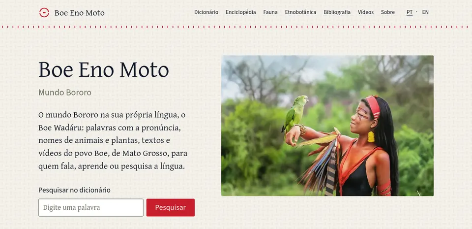
Todas as plataformas têm a mesma interface, com as cores, o alfabeto e os padrões de cada povo. Esta é a letra A do dicionário Enawenê-Nawê (https://enawenenawe.terradoc.org/pt/dictionary/a.html):
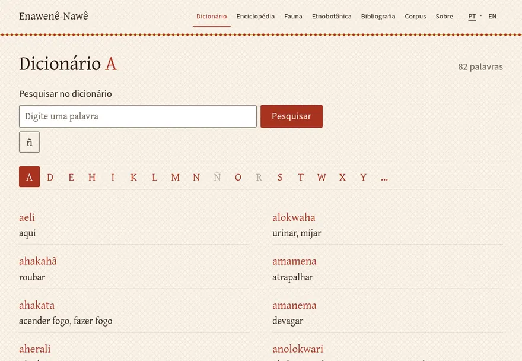
2. Onde fica cada coisa no repositório
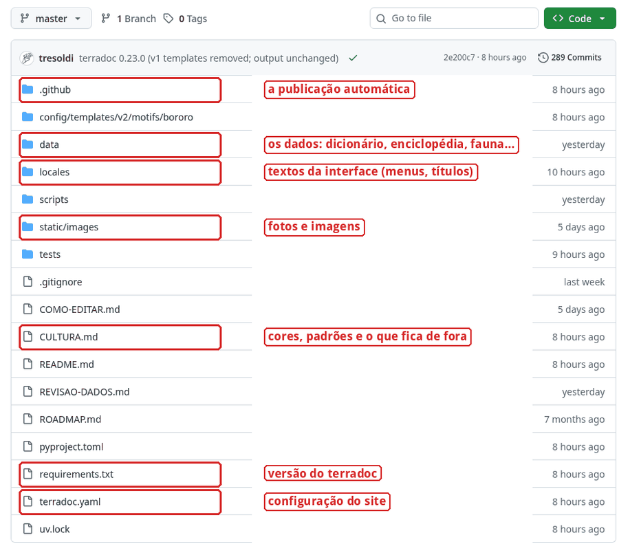
| O que | Onde | Formato |
|---|---|---|
| Dicionário | data/dictionary.tsv |
tabela separada por tabulações, uma palavra por linha |
| Enciclopédia (verbetes) | data/encyclopedia/<id>.md |
um arquivo por verbete: cabeçalho YAML e texto em Markdown |
| Categorias da enciclopédia | data/categories.yaml |
lista das categorias permitidas (só no Bororo, por enquanto) |
| Animais (fauna) | data/fauna.yaml |
YAML, um bloco por animal |
| Plantas (etnobotânica) | data/ethnobotany.yaml |
YAML, um bloco por planta |
| Bibliografia | data/bororo.bib (Bororo), data/references.bib (Enawenê-Nawê) |
BibTeX |
| Vídeos | data/videos.yaml |
YAML, com o campo consent obrigatório |
| Gravações do dicionário | data/audio/*.webm |
áudio em WebM |
| Consentimento das gravações | data/audio/manifest.tsv |
tabela: arquivo, id da palavra, código do falante, consentimento |
| Fotos e imagens | static/images/ |
JPG, PNG ou WebP; copiadas para o site |
| Créditos das fotos | junto de cada foto: pic_credit e pic_source (fauna, plantas), credit (enciclopédia), theme.hero_credit (foto da página inicial) |
texto |
| Textos da interface (menus, títulos, apresentação) | locales/pt.yaml, locales/en.yaml |
YAML |
| Cores, padrões e o que fica de fora | CULTURA.md (explicação) e config/templates/v2/motifs/<povo>/ (desenhos) |
texto e SVG |
| Configuração do site (nome, idiomas, alfabeto, cores, foto inicial) | terradoc.yaml |
YAML |
| Versão do terradoc | requirements.txt |
uma linha: terradoc==0.23.0 |
| Publicação automática | .github/workflows/site.yml e .github/CODEOWNERS |
não mexa sem falar com o Tiago |
| Pendências nos dados (homônimos, definições vazias…) | REVISAO-DADOS.md |
lista de trabalho para a equipe |
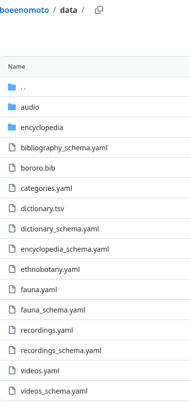
Não procure os arquivos data/*.json nem a pasta docs/: eles são gerados na construção e
não fazem parte do repositório.
O GitHub mostra a tabela do dicionário como uma planilha. A coluna id é o número da palavra
(nunca o reutilize), entry é a palavra, ipa a pronúncia, pos a classe gramatical (o
Bororo aceita só uma lista fixa de valores, como LEX, S, V), definition a tradução.
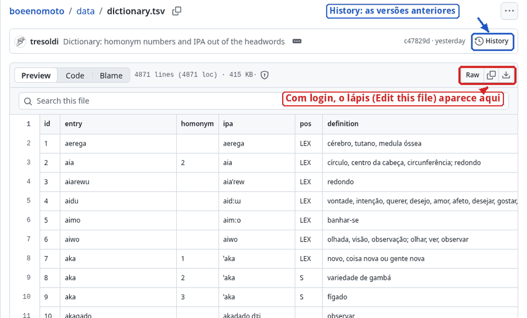
E é assim que essa linha aparece no site:
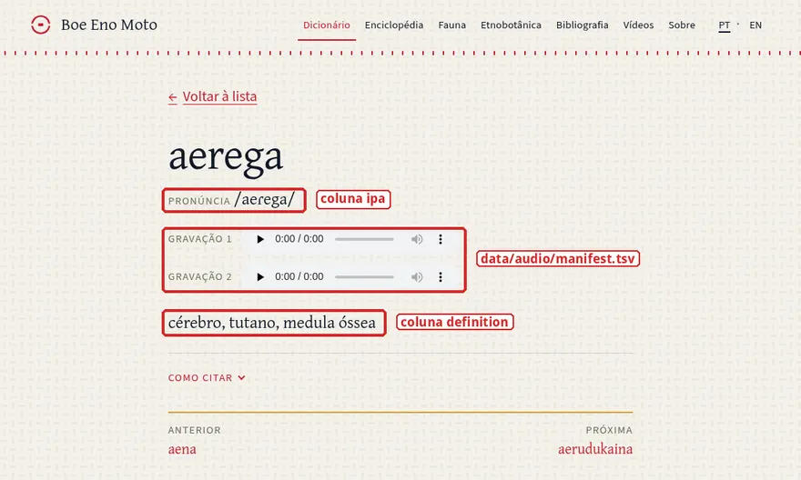
3. Alterar pelo navegador, sem instalar nada
Você precisa de uma conta no GitHub com acesso de escrita ao repositório (peça ao Tiago). As capturas de tela abaixo foram feitas sem login; com login, aparecem os botões de edição (o lápis, Add file, Commit changes…).
3.1 Editar um arquivo
- Abra o repositório, por exemplo https://github.com/plataformasindigenas/boeenomoto, e
entre nas pastas até o arquivo (
data→dictionary.tsv). - Clique no lápis (Edit this file), no canto direito, acima do conteúdo (ver a imagem da seção 2).
- Faça a alteração. Para corrigir uma palavra numa tabela
.tsv, mude só o texto dentro da célula; não apague nem acrescente tabulações.
3.2 Salvar num ramo novo (recomendado)
- Clique em Commit changes… (botão verde, no alto).
- Em Commit message, escreva em uma linha o que mudou, por exemplo
Dicionário: corrige a definição de aerega. - Escolha Create a new branch for this commit and start a pull request. O GitHub sugere
um nome como
seu-usuario-patch-1; pode manter, ou escrever algo comocorrige-aerega(use só letras minúsculas, números e hífens). - Clique em Propose changes. O GitHub abre a página do pull request; você pode criá-lo agora ou depois (passo 11).
Se a alteração for pequena e você tiver certeza, pode escolher Commit directly to the
master branch: ela vai direto para o site oficial, sem prévia. Mesmo assim ela é
verificada antes; um erro não chega ao site.
3.3 Abrir a prévia
-
Abra a aba Actions do repositório. A execução da sua alteração aparece no alto, com o nome do ramo ao lado. Uma bolinha amarela quer dizer "rodando"; um sinal verde, "deu certo"; um X vermelho, "falhou" (veja a seção 5).
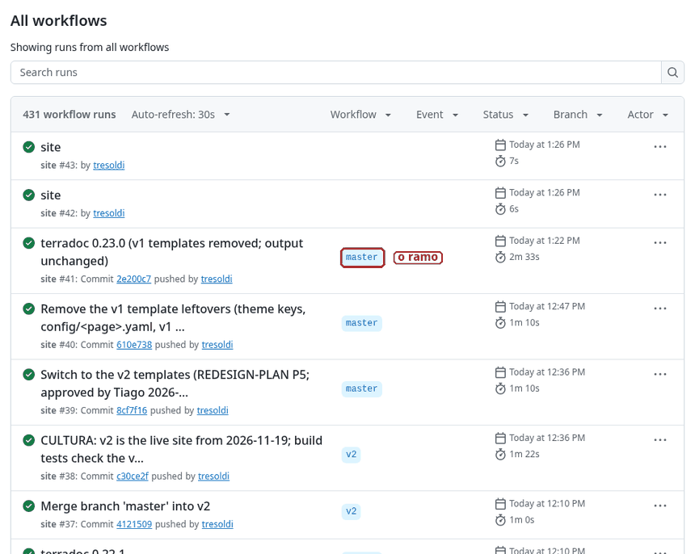
-
Quando ficar verde, espere até 2 minutos e abra a prévia:
https://previews.terradoc.org/boeenomoto/<nome-do-ramo>/. A lista de prévias de cada site fica emhttps://previews.terradoc.org/<site>/(por exemplo https://previews.terradoc.org/boeenomoto/). Com login, a página da execução também mostra o link da prévia, sob Publicado / Published.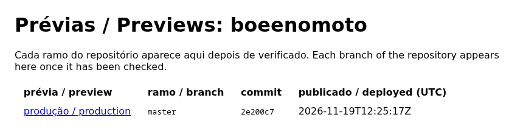
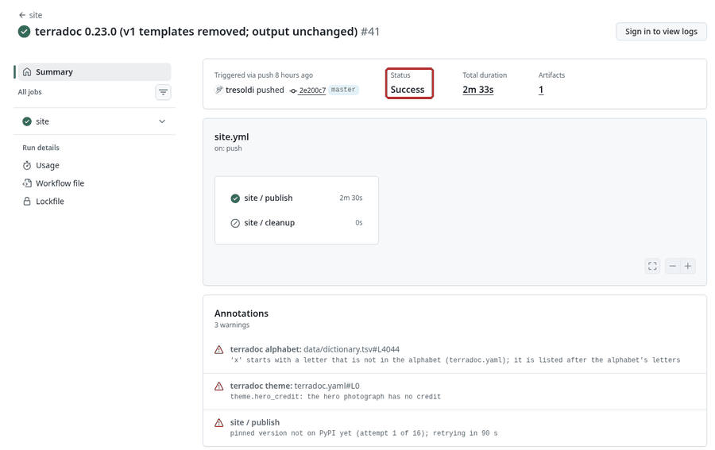
Os avisos (triângulos amarelos) em Annotations não bloqueiam nada: são coisas a melhorar, como uma foto sem crédito.
3.4 Conferir
- Na prévia, procure a palavra, o verbete ou a foto que você mudou e confira o resultado, em português e em inglês. Se precisar corrigir algo, edite de novo no mesmo ramo (no GitHub, escolha o ramo no seletor de ramos, no alto à esquerda, antes de abrir o arquivo). A prévia se atualiza sozinha.
3.5 Levar para o site oficial
- Abra a aba Pull requests → New pull request (ou o aviso amarelo Compare & pull request), escolha o seu ramo e clique em Create pull request. Escreva o que mudou. É aqui que outra pessoa pode revisar.
- Clique em Merge pull request → Confirm merge. Isso junta o seu ramo ao
master. - Clique em Delete branch. A prévia desaparece sozinha, uns 10 minutos depois.
3.6 Ver no ar
- Na aba Actions aparece uma nova execução, agora no ramo
master. Quando ela ficar verde, espere até 2 minutos e abra o site oficial: https://boeenomoto.terradoc.org/. Se a página antiga continuar aparecendo, recarregue-a (Ctrl+Shift+R, ou Cmd+Shift+R no Mac).
3.7 Enviar arquivos novos (fotos, gravações, verbetes)
Entre na pasta (por exemplo static/images), clique em Add file → Upload files,
arraste os arquivos e salve como no passo 4 em diante. Para um verbete novo, use
Add file → Create new file dentro de data/encyclopedia/.
4. Alterar no seu computador
Vale a pena para mudanças grandes (muitas linhas, muitos arquivos) e para ver o site antes de enviar. Você precisa de git e Python 3.12 (a mesma versão usada na publicação).
4.1 Uma vez só: copiar o repositório e instalar o terradoc
git clone https://github.com/plataformasindigenas/boeenomoto.git
cd boeenomoto
python3 -m venv .venv
source .venv/bin/activate # no Windows: .venv\Scripts\activate
pip install -r requirements.txt
O requirements.txt instala exatamente a versão do terradoc que o site usa, para que o
resultado no seu computador seja igual ao da publicação. A pasta .venv não vai para o
repositório.
Nas próximas vezes, basta entrar na pasta, ativar o ambiente (source .venv/bin/activate) e
trazer as novidades:
git switch master
git pull
pip install -r requirements.txt # só muda algo se a versão do terradoc mudou
4.2 Criar um ramo e editar
git switch -c corrige-fauna
Edite os arquivos com o editor de sua preferência. Para as tabelas .tsv você pode usar o
LibreOffice Calc: ao salvar, escolha Texto CSV, separador tabulação, codificação
UTF-8, sem aspas em volta do texto.
4.3 Verificar
terradoc check
Leva alguns segundos e não escreve nada. Cada problema aparece com o arquivo e a linha. Os
erros (ERROR) impedem a publicação; os avisos (WARNING) não. Exemplo com quatro
erros (feitos de propósito, numa cópia):
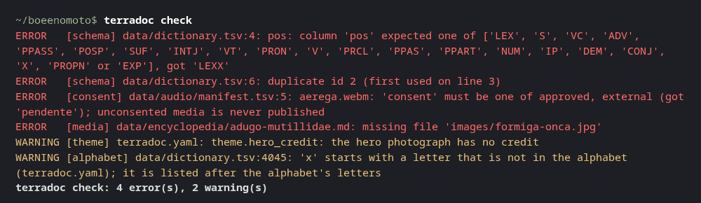
Como ler:
data/dictionary.tsv:4: pos: … got 'LEXX': na linha 4 da tabela, a classe gramaticalLEXXnão está na lista permitida (o certo eraLEX).duplicate id 2 (first used on line 3): duas linhas com o mesmo número na colunaid.[consent] … 'consent' must be one of approved, external: uma gravação sem consentimento registrado. Não é publicada, e a publicação inteira é bloqueada até corrigir.[media] … missing file 'images/formiga-onca.jpg': o verbete cita uma foto que não está emstatic/images/(nome errado ou foto não enviada).
4.4 Construir e abrir o site no seu computador
terradoc build --out /tmp/site
(No Windows, use outra pasta, por exemplo --out C:\temp\site.) O comando roda o check
primeiro e para se houver erro. O Bororo, com mais de 11 000 páginas, leva menos de um
minuto. Ele também lista as fotos que estão no site sem crédito:
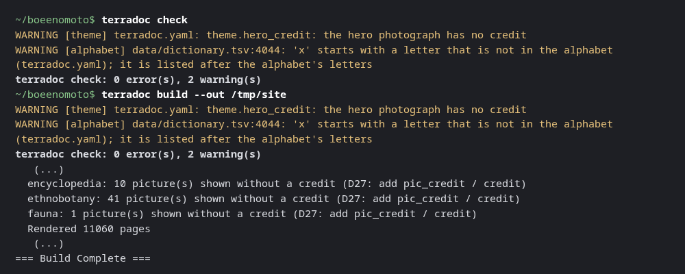
Abra no navegador o arquivo /tmp/site/pt/index.html (ou arraste-o para uma janela do
navegador) e navegue até o que você mudou:
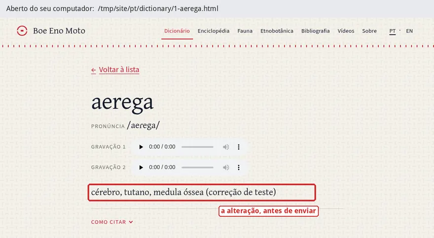
Para reconstruir do zero, apagando a versão anterior: terradoc build --out /tmp/site --clean.
A construção também deixa alguns arquivos data/*.json na sua cópia: são intermediários, o git
os ignora. Se preferir que fiquem fora, acrescente --bundle-dir /tmp/bundle.
4.5 Enviar
git add data/fauna.yaml static/images/fauna_200_novo.jpg
git commit -m "Fauna: acrescenta ..."
git push -u origin corrige-fauna
Depois disso, tudo segue como no navegador: a prévia em
https://previews.terradoc.org/boeenomoto/corrige-fauna/, o pull request, o merge
(passos 8 a 14).
5. Quando algo dá errado
Nada quebrado chega ao site: o site no ar continua com a última versão boa. Uma alteração com erro fica parada até alguém corrigi-la.
5.1 Como você fica sabendo
-
O commit ganha um X vermelho no GitHub, e a execução na aba Actions aparece como Failure.
-
Na página da execução, em Annotations, cada problema aparece com o arquivo e a linha. Na página do commit, as mesmas anotações aparecem ao lado da linha do arquivo.
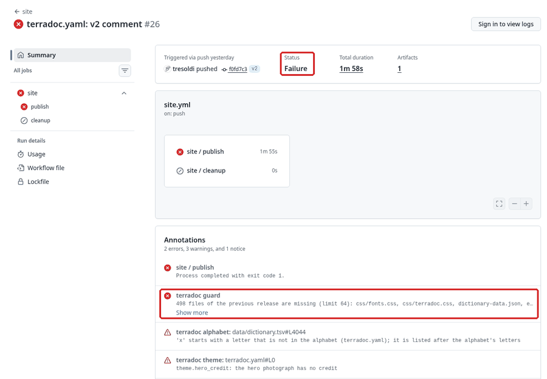
-
Abre-se uma issue chamada "Publicação falhou: <ramo>", que explica cada problema numa tabela, em português e inglês, com o link da execução. Ela menciona quem enviou a alteração e os responsáveis pelos arquivos (
.github/CODEOWNERS), e o GitHub manda um e-mail. Se houver muitos erros, a lista completa está na issue.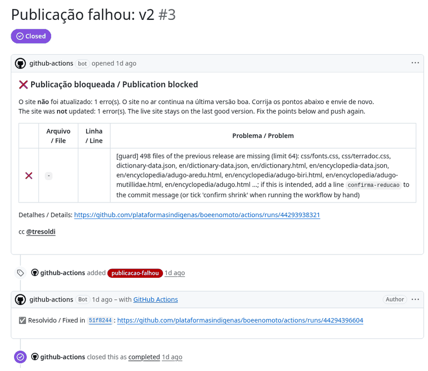
-
Corrija e envie de novo, no mesmo ramo. Quando a próxima execução der certo, a issue se fecha sozinha ("Resolvido / Fixed").
Erros comuns: um id repetido no dicionário; uma linha com uma coluna a mais ou a menos;
uma classe gramatical fora da lista; uma foto ou gravação citada que não existe; uma
gravação ou vídeo sem consent; uma página do portal que existe em um idioma e falta em outro.
5.2 A guarda: apagar muito de uma vez é bloqueado
A guarda compara o site novo com o que está no ar (no caso de uma prévia nova, com o site oficial) e bloqueia quando:
- uma seção (dicionário, fauna, enciclopédia…) perde mais de 20 registros, ou mais de 10 % deles;
- o site perde mais de 10 arquivos publicados (páginas, fotos, gravações); num site grande o limite é 5 % dos arquivos (no Bororo, algumas centenas).
Isso protege contra acidentes, como uma tabela salva pela metade. Se a redução for de propósito, escreva numa linha da mensagem do commit:
confirma-reducao
No navegador, ponha confirma-reducao no campo Extended description, abaixo da mensagem do
commit. Basta estar em um dos commits enviados naquele push. A guarda então só avisa e deixa
publicar. A issue de exemplo acima é justamente um bloqueio da guarda.
5.3 Como desfazer uma alteração que já está no ar
- Pelo navegador, se a alteração entrou por pull request: abra o pull request já
juntado e clique em Revert. O GitHub cria um novo pull request que desfaz tudo; junte-o
ao
master. - Pelo navegador, se a alteração foi direto ao
master: abra o arquivo, clique em History, abra a versão anterior, copie o conteúdo e salve-o por cima da versão atual (um novo commit). - No computador:
git revert <commit>egit push. O código do commit (como2e200c7) aparece no histórico.
Desfazer é uma alteração como outra qualquer: passa pela verificação e chega ao site em poucos minutos.
Qualquer coisa que precise acontecer no servidor (voltar o site a uma versão anterior imediatamente, tirar um arquivo de todas as versões guardadas, uma prévia que não aparece) é um pedido ao Tiago.
6. Receitas para tarefas comuns
6.1 Corrigir uma palavra
- Abra
data/dictionary.tsve localize a linha (no GitHub, use Search this file; no computador, a busca do editor). - Corrija o texto na coluna certa (
entry,ipa,definition,example_sent…). Não mude oid. - Salve num ramo, confira a prévia, junte ao
master(seção 3).
Homônimos: não escreva o número na palavra; use a coluna homonym (1, 2, …), e o site mostra
aka¹, aka². O arquivo REVISAO-DADOS.md lista os casos ainda pendentes.
6.2 Acrescentar uma palavra com gravação
-
Antes de tudo: a gravação tem consentimento para ser publicada? Se não tiver (ou se ainda estiver pendente), pare aqui e guarde o arquivo fora do repositório.
-
A linha do dicionário. Acrescente uma linha ao fim de
data/dictionary.tsv, com umidnovo (o maior número existente mais um; nunca reutilize um número apagado). O jeito mais seguro de manter as tabulações é copiar uma linha existente e trocar o conteúdo. -
O arquivo de áudio. Converta a gravação para WebM, por exemplo com o programa ffmpeg:
ffmpeg -i aerega.wav -c:a libopus -b:a 48k aerega.webmDê ao arquivo o nome da palavra, sem acentos nem espaços. Uma segunda gravação da mesma palavra leva
__e um código:aerega__s03.webm. Nunca ponha o nome de uma pessoa no nome do arquivo: o nome do arquivo aparece no endereço da gravação, no site. -
Envie o arquivo para
data/audio/. -
O registro de consentimento. Acrescente uma linha a
data/audio/manifest.tsv, com as quatro colunas separadas por tabulação:file entry_id speaker consent aerega__s03.webm1s03approvedfile: o nome do arquivo emdata/audio/;entry_id: oidda palavra no dicionário (uma gravação de homófonos pode ter uma linha para cada palavra);speaker: um código do falante, comos03(de 1 a 4 letras minúsculas e de 1 a 3 algarismos), nunca o nome; pode ficar vazio. O código não é publicado; a lista que liga códigos a pessoas fica fora do repositório;consent:approvedquando a comunidade aprovou a publicação.
-
Salve tudo no mesmo ramo (um commit ou vários) e confira a prévia: a página da palavra ganha um tocador "Gravação 1", "Gravação 2"…
A verificação bloqueia: um arquivo .webm em data/audio/ que não esteja no
manifest.tsv; uma linha do manifesto cujo arquivo não existe; um entry_id que não está no
dicionário; um consent diferente de approved ou external; um código de falante que
pareça um nome.
6.3 Acrescentar uma foto com crédito
-
Confirme que a foto pode ser publicada: é de vocês com autorização de quem aparece nela, ou tem licença aberta (Wikimedia Commons, iNaturalist com licença CC…).
-
Envie a foto para
static/images/com um nome sem espaços nem acentos, por exemplofauna_200_tuiuiu.jpg. Fotos grandes demais deixam o site lento: 1600 pixels de largura bastam. -
Ligue a foto ao registro, sempre com o crédito:
-
Fauna ou plantas (
data/fauna.yaml,data/ethnobotany.yaml):pic_link: images/fauna_200_tuiuiu.jpg pic_credit: "© Nome do autor, CC BY-SA 4.0, via Wikimedia Commons" pic_source: "https://commons.wikimedia.org/wiki/File:..."pic_sourceé o endereço da foto original (precisa começar comhttps://) e vira um link no crédito. -
Enciclopédia, no cabeçalho do verbete:
images: - url: images/enc_tuiuiu_0.jpg alt: Tuiuiú pousado à beira do rio credit: "© Nome do autor, CC BY 4.0"altdescreve o que a foto mostra, para quem não a vê. -
Foto da página inicial:
theme.hero_image,theme.hero_altetheme.hero_creditemterradoc.yaml. -
Páginas do portal: o crédito vai entre aspas depois do caminho:
.
-
-
Salve num ramo e confira a prévia.
Uma foto citada que não existe é um erro. Uma foto sem crédito é só um aviso, mas a regra do projeto é que toda foto tenha crédito (a construção lista quantas faltam).
6.4 Escrever um verbete da enciclopédia
-
Escolha o id: letras minúsculas sem acento, números e hífens (
adugo,aroe-maiwu). O nome do arquivo é o id:data/encyclopedia/aroe-maiwu.md. -
Escreva o arquivo, com o cabeçalho entre as duas linhas
---:--- id: aroe-maiwu title: Aroe Maiwu variants: [] abstract: Uma ou duas frases que resumem o verbete (aparecem na lista e nas buscas). categories: - cosmologia/espírito images: [] references: - Albisetti1962aEnciclopedia see_also: - aroe --- O texto do verbete, em Markdown: parágrafos separados por uma linha em branco, **negrito**, *itálico*, listas com `-`, títulos com `##`.categories: no Bororo, cada categoria precisa estar emdata/categories.yaml. Para criar uma nova, acrescente-a lá também.references: as chaves das obras emdata/bororo.bib(a palavra depois de@article{ou@book{). Uma chave que não existe é erro: acrescente a obra ao.bibprimeiro.see_also: ids de outros verbetes que existem.images: veja a receita 6.3.
-
Salve num ramo (no navegador: Add file → Create new file dentro de
data/encyclopedia/) e confira a prévia.
6.5 Acrescentar ou mudar uma página do portal
O portal https://plataformas.terradoc.org/ é feito pelo terradoc a partir de páginas em
Markdown, no repositório www, pasta portal/, e é publicado pelo arquivo
.github/workflows/publish.yml desse repositório. As prévias ficam em
https://previews.terradoc.org/plataformas/<ramo>/.
Situação em 2026-11-19: o portal feito pelo terradoc está no ramo
v2dowww. Até o Tiago juntar esse ramo aomaster, o portal no ar é a versão antiga, e as páginas abaixo estão no ramov2. Comece os seus ramos a partir dele.
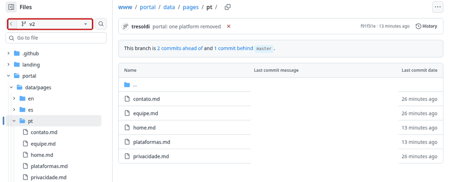
-
Cada página é um arquivo
portal/data/pages/<idioma>/<nome>.md. A mesma página existe em português, inglês e espanhol, com o mesmo nome de arquivo (pt/equipe.md,en/equipe.md,es/equipe.md); a verificação acusa uma página que falte num idioma. -
O cabeçalho:
--- title: Equipe # obrigatório: o título e o nome no menu description: Quem faz o projeto. # opcional: a frase de abertura nav: 2 # opcional: entra no menu, nesta ordem aliases: [equipe.html] # opcional: endereços antigos que levam para cá --- O texto, em Markdown (sem HTML). -
O nome do arquivo usa só
a-z,0-9e-, e vira o endereço:pt/equipe.html. -
Fotos vêm de
portal/static/images/, com crédito (receita 6.3). Fotos de outros sites não são aceitas: use um link. -
Uma lista em que cada item tem uma foto vira um conjunto de cartões (como a página da equipe).
-
home.mdé o texto da página inicial, abaixo da foto.
6.6 Retirar algo a pedido (consentimento retirado)
Quando alguém pede para retirar uma gravação, uma foto ou um texto:
- Avise o Tiago imediatamente, dizendo exatamente o quê (arquivo, palavra, verbete) e em qual plataforma. O site guarda versões anteriores no servidor, e só ele pode tirar o arquivo de todas elas; ele também cuida do histórico do GitHub e das cópias de dados que cada execução guarda por 30 dias.
- Tire do repositório, num commit (pode ser direto no
master, pela urgência):- uma gravação: apague o arquivo de
data/audio/e a linha dele emmanifest.tsv; - uma foto: apague o arquivo de
static/images/e a referência a ele (pic_link,images:do verbete), com o crédito; - um texto ou registro: apague o verbete ou a linha.
- uma gravação: apague o arquivo de
- Se forem muitos itens de uma vez, a guarda vai bloquear: use
confirma-reducao(seção 5.2).
Os dois passos são necessários: se o arquivo sair só do servidor, a próxima publicação o traz de volta; se sair só do repositório, as versões guardadas ainda o têm. Apagar do repositório não apaga do histórico do git: por isso o cuidado está antes, em nunca enviar o que não tem consentimento (seção 9).
7. Atualizar o terradoc numa plataforma
Cada plataforma usa uma versão fixa do terradoc, escrita em dois lugares que precisam concordar:
requirements.txt:terradoc==0.23.0;.github/workflows/site.yml: a linhauses: plataformasindigenas/terradoc/.github/workflows/site.yml@<código> # v0.23.0.
Assim, uma versão nova do terradoc nunca muda um site sozinha. Quem atualiza é o Tiago:
ele lança a versão nova, confere que todas as plataformas continuam construindo do mesmo jeito
e então muda as duas linhas em cada repositório, num commit como
terradoc 0.24.0 (…). Você não precisa fazer nada; depois de uma atualização, basta rodar de
novo pip install -r requirements.txt na sua cópia local.
Se você precisar de algo novo no terradoc (um campo, uma página, um texto da interface), peça ao Tiago.
8. Começar uma plataforma nova
Duas plataformas novas já começaram, em 2026-11-19: Haliti-Paresi (repositório paresi) e
Terena (terena). Por enquanto têm só a enciclopédia e a bibliografia, a partir de fontes
publicadas, e estão em prévia no ramo inicio
(https://previews.terradoc.org/paresi/inicio/, https://previews.terradoc.org/terena/inicio/);
o master só recebe o site quando a comunidade o tiver visto. As cores e os desenhos de cada uma,
e o que ainda falta combinar com a comunidade (o alfabeto, por exemplo), estão no CULTURA.md
de cada repositório. Os dados da pesquisa de campo entram nesses repositórios, no ramo inicio.
Para uma plataforma ainda mais nova, o trabalho se divide assim.
O que você prepara
- Consentimento e acordo com a comunidade: o que pode ser publicado, quem aprova (pode ser um papel, como "coordenador", em vez de um nome) e o que fica de fora.
- O nome da plataforma (de preferência na própria língua) e um endereço curto, sem
acentos, que vira o nome do repositório e o endereço do site:
https://<nome>.terradoc.org/. - O código da língua (ISO 639-3) e o alfabeto: as letras e a ordem em que o dicionário deve ser organizado, incluindo dígrafos, a partir de uma fonte publicada (cite-a).
- O dicionário numa tabela com as colunas
id,entry,ipa,pos,definition,example_sent(e as outras que fizerem sentido), um número único por linha. - Os textos de apresentação: subtítulo, uma frase de abertura, o "Sobre", em português e inglês.
- Fotos: uma para a página inicial (dizendo se mostra pessoas), e as outras com crédito e autorização.
- Cores: cinco cores com papéis (fundo, texto, títulos e links, faixas, texto secundário), cada uma com o material de onde vem (urucum, argila, jenipapo…). Padrões gráficos do povo só com aprovação da comunidade; sem isso, o site usa o padrão neutro do terradoc e fica completo assim mesmo.
- O primeiro
CULTURA.md: de onde vêm as cores e os padrões, quem aprovou e quando, e o que ficou de fora de propósito (veja os do Bororo e do Enawenê-Nawê como modelo). - Se houver: verbetes, fauna, plantas, bibliografia (
.bib), gravações com o registro de consentimento.
O que o Tiago faz
- cria o repositório em
plataformasindigenas, a partir do modelo do terradoc (terradoc init), com a publicação automática e oCODEOWNERS; - prepara o servidor e o endereço (DNS) do novo site;
- acrescenta a plataforma ao portal e às verificações do terradoc.
Depois disso, a plataforma nova funciona exatamente como as outras: você edita, a prévia
aparece, o master é o site oficial.
9. Regras que importam
- Tudo o que é enviado é público. Os repositórios são públicos. Qualquer arquivo enviado a qualquer ramo, inclusive uma prévia, fica visível para todos, e apagar depois não resolve: o histórico do git guarda tudo, e só o suporte do GitHub consegue remover de verdade. As mensagens de commit também são públicas.
- Consentimento primeiro. Material com consentimento pendente nunca é enviado:
guarde-o fora do repositório até a comunidade aprovar. Cada gravação e cada vídeo precisa de
consent:approved: a comunidade aprovou que este site publique o material;external: um vídeo público de outra pessoa que o site só incorpora (YouTube, por exemplo). Sem um desses dois valores, a publicação é bloqueada. Se algo for enviado por engano, avise o Tiago imediatamente (receita 6.6).
- Nenhum nome de falante nos sites, por enquanto. No
manifest.tsvvai um código (s01), nunca um nome; também nada de nomes nos nomes de arquivos, nas legendas ou nos verbetes, até que isso seja combinado com as comunidades. - Toda foto tem crédito (autor, licença, fonte) e autorização de quem aparece nela. Qualquer foto pode ser retirada a pedido.
- Nada restrito ou sagrado. Conhecimento, objetos, cantos, pinturas e imagens de uso restrito (rituais, funerários, de clã ou de família) não entram nos sites, nem como inspiração. Na dúvida, não publique e pergunte.
- Os padrões pertencem aos povos. As cores, a faixa, a textura e o emblema de cada site
vêm daquele povo, estão explicados no
CULTURA.mddo site e não são usados no site de outro povo. Mudanças nesses elementos passam pela aprovação registrada noCULTURA.md.
10. Pequeno glossário
| Termo | O que é |
|---|---|
| repositório | a pasta do projeto no GitHub, com todo o histórico; um por plataforma |
| commit | uma alteração salva, com uma mensagem que diz o que mudou |
| push | enviar os seus commits para o GitHub (no navegador, acontece ao salvar) |
| ramo (branch) | uma linha de trabalho separada; master é o site oficial, os outros viram prévias |
| prévia | o site completo construído a partir de um ramo, só para conferir |
| pull request | o pedido para juntar um ramo ao master, onde a mudança pode ser revisada |
| merge | juntar um ramo ao master; é o que leva a mudança ao site oficial |
| revert | um commit novo que desfaz um commit anterior |
| GitHub Actions | o serviço do GitHub que verifica, constrói e publica a cada push |
| issue | um aviso ou pedido registrado no repositório; "Publicação falhou" é aberta automaticamente |
| TSV | tabela em texto, com as colunas separadas por tabulações |
| YAML | formato de texto com chave: valor, em que a indentação (espaços) importa |
| Markdown | texto com marcações simples: **negrito**, *itálico*, ## título |
Dúvidas: pergunte ao Tiago. Detalhes técnicos de como a publicação funciona estão em
docs/publishing.md.